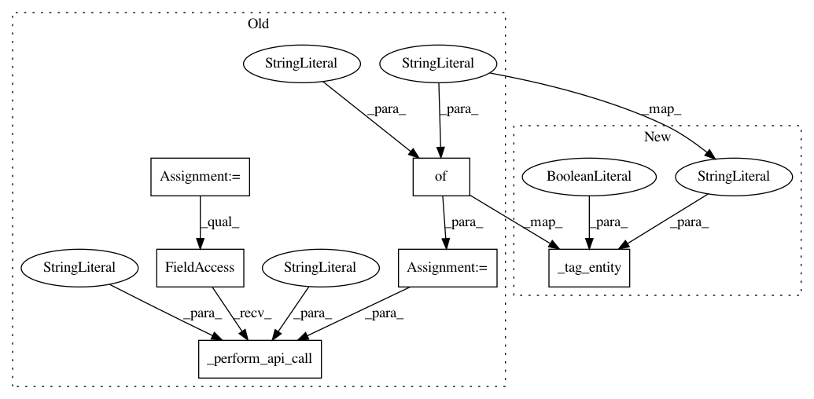

8cc143664be14768bb76fd8a36bdcbc33b3e02ab,openml/tasks/task.py,OpenMLTask,remove_tag,#OpenMLTask#Any#,82
Before Change
tag : str
Tag to attach to the task.
data = {"task_id": self.task_id, "tag": tag}
openml._api_calls._perform_api_call("/task/untag", "post", data=data)
class OpenMLSupervisedTask(OpenMLTask):
def __init__(self, task_id, task_type_id, task_type, data_set_id,
After Change
tag : str
Tag to attach to the task.
_tag_entity("task", self.task_id, tag, untag=True)
class OpenMLSupervisedTask(OpenMLTask):
def __init__(self, task_id, task_type_id, task_type, data_set_id,
In pattern: SUPERPATTERN
Frequency: 3
Non-data size: 6
Instances
Project Name: openml/openml-python
Commit Name: 8cc143664be14768bb76fd8a36bdcbc33b3e02ab
Time: 2019-04-11
Author: 44670788+sahithyaravi1493@users.noreply.github.com
File Name: openml/tasks/task.py
Class Name: OpenMLTask
Method Name: remove_tag
Project Name: openml/openml-python
Commit Name: 8cc143664be14768bb76fd8a36bdcbc33b3e02ab
Time: 2019-04-11
Author: 44670788+sahithyaravi1493@users.noreply.github.com
File Name: openml/flows/flow.py
Class Name: OpenMLFlow
Method Name: remove_tag
Project Name: openml/openml-python
Commit Name: 8cc143664be14768bb76fd8a36bdcbc33b3e02ab
Time: 2019-04-11
Author: 44670788+sahithyaravi1493@users.noreply.github.com
File Name: openml/runs/run.py
Class Name: OpenMLRun
Method Name: remove_tag